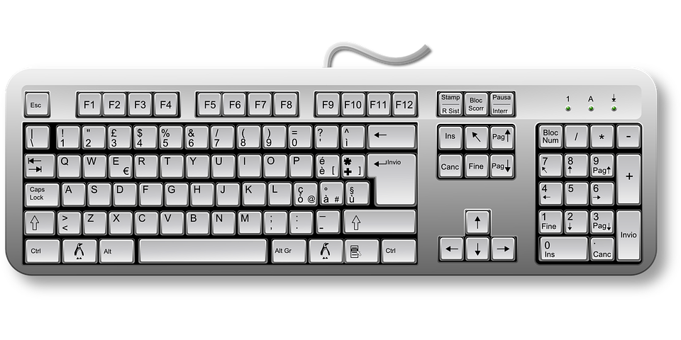

In informatica, la tastiera è una periferica di input del computer destinata all'inserimento manuale di dati, numerici o alfanumerici, nella memoria del computer e al controllo del computer stesso. Può essere incorporata nell'unità centrale del computer (come ad esempio avviene negli home computer e nei computer portatili) o essere una periferica esterna.
